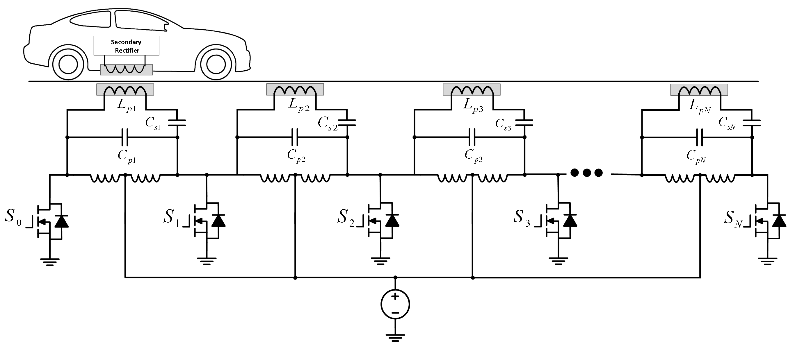
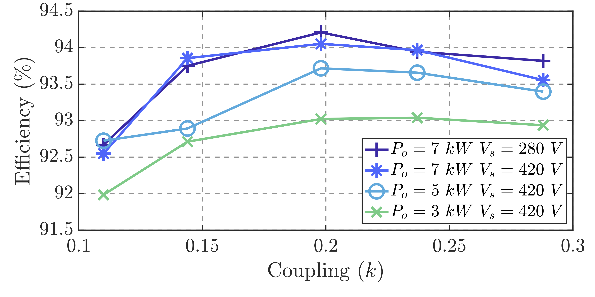
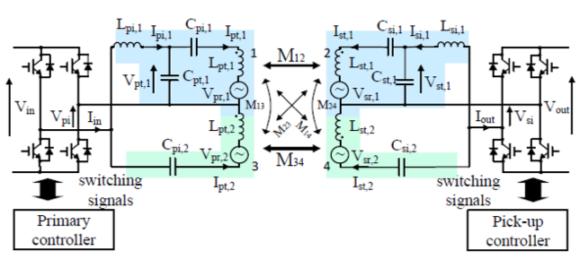

class: title-slide count: false .logo-title[] # WPT Systems for EV Applications ### Research at UoA .TitleAuthor[Duleepa J Thrimawithana] --- layout: true name: template_slide .logo-slide[] .footer[Duleepa J Thrimawithana, Department of Electrical, Computer and Software Engineering (2019)] --- # New Zealand .center[<iframe width="975" height="430" src="https://www.youtube.com/embed/fHCemviY06Y?modestbranding=0&autohide=1&controls=0&playsinline=0&autoplay=0" frameborder="50" allow="encrypted-media" allowfullscreen></iframe>] --- # The University of Auckland - Highest ranked New Zealand university and 85th in the QS World University Ranking - Over 5,000 staff members and 40,000 students - Nine faculties including Medical & Health Sciences, Engineering, Business & Economics and Science .center[<img src="img/UoAMap.png" height="300">] --- # Dept. of Electrical, Computer & Software Eng. .left-column[ - One of the 5 deparments in the Faculty of Engineering - Offers 3 undergraduate degree programs - Electrical & Electronics, Computer Systems and Software - Project based teaching - 35+ full-time academic staff members and 15+ post-doctoral research fellows - 150+ postgraduate students and 600+ undergraduate students - Regular visiting research scholars and research students - Research groups include Power Electronics, Power Systems, Signal Processing, Robotics, Embedded Systems, Parallel Computing, Telecommunications and Control Systems ] .right-column[ <img src="img/UoAEng.png" width="300px"> ] --- # Power Electronics Research Group .center[<img src="img/PEGROUP.gif" height="430">] --- class: title-slide layout: false count: false .logo-title[] # Research Projects ### Highlights & Updates --- layout: true name: template_slide .logo-slide[] .footer[Duleepa J Thrimawithana, Department of Electrical, Computer and Software Engineering (2019)] --- # Research Topics .left-column[ - Bi-directional IPT systems - Synchronisation & optimal control - Circuit topologies - Misalignment tolerant high-power IPT systems - Compensation topologies & control techniques - Modular and multi-level ciruit topologies - Grid integration of IPT systems - Circuit topologies for grid services - Dynamic charging - Circuit topologies & control techniques - Power distribution techniques - Thermal and packaging ] .right-column[ <img src="img/Prtos.gif" width="350px"> ] --- # Integrated Boost MMC (IB-MMC) .left-column[ - Derives a higher voltage to drive the compensation network - Reduces current stress and may eliminate step-up transformer - Inherantly eliminates circulating currents - Series-blocking capacitor can be omitted - Generate a low THD staircase modulated output voltage - Can generate wide range of voltages - Can use lower voltage higher performance devices <img src="img/IBMMC_Conv.gif" height="160px"> ] .right-column[ <img src="img/IBMMC_Vpi.gif" width="275px"> ] --- # IB-MMC Performance .left-column[ <img src="img/IBMMC_W.gif" width="700px"> ] .right-column[ - Maintains a constant 7.7 kW power transfer through primary control - Operate in 5-level mode at low k and 3-level mode at high k - Efficiency ranges between 91.5% and 92.4% across entire operating region - A simple algorithm used to ensure module voltages are balanced ] --- # Push-Pull Coupler Array (PPCA) .left-column[ .center[] - Each coupler driven by a single switch and controlled independently - Swtich stresses do not scale with the number of couplers - Switches only conduct the DC current - A damaged module only impacts the two neighbouring modules ] .right-column[ <img src="img/PPCA_W.gif" width="350px"> ] --- # Boost Active Bridge (BAB) .left-column[ - Integrated post/pre regulation capabilities enable maximum efficiency tracking - Wide ZVS range and reduced current stresses - Eliminates DC-blocking capacitor <br></br> <img src="img/BAB_Conv.png" height="200px"> ] .right-column[.right[ <img src="img/BAB_W1.png" width="310px"> <img src="img/BAB_W2.png" width="310px"> ]] --- # WPT2/Z2 VA with Integrated BAB .left-column[ - Boost inductors integrated in to the DD pad - Designed to comply with WPT2/Z2 specifications - Controlled both the GA and VA to maintain a nearly constant efficiency under all operating conditions .center[<img src="img/IBAB_Conv.png" height="220px">] ] .right-column[ <img src="img/IBAB_W1.png" width="350px">  ] --- # Hybrid Compensation Topologies .left-column[ - Complementary compensation networks employed to improve misalignment tolerance - Require less or no control - Nearly constant power transfer across the entire operating region - Minimize increase in VA due to detuning caused by changes in coupler inductanes - For example the power throughput of a parallel hybrid system can be given by \\[P\_{out} = \{8V\_{in}V\_{out}\over\pi^2} \left(\frac{1}{\omega\_TM\_s} + \frac{M\_p}{\omega\_TL\_{pi}L\_{si}}\right)\\] ] .right-column[  <img src="img/Hybrid_Conv2.png" width="350px"> ] --- # Low Cost IPT Systems .left-column[ - For example push-pull converters employed in both VA and GA - DC indcutor(s) and current splitting transformer can be integrted in with the D coupler - Generates a higher voltage to drive the couplers - Relative phase between converters controls the power flow - Switches maintain ZVS across the entire operating region .center[<img src="img/PPRC_W1.png" height="205px">] ] .right-column[ .center[<img src="img/PPRC_Conv.png" width="310px">] .center[<img src="img/PPRC_W.png" width="230px">] ] --- # Dynamic Wireless Charging .center[<iframe width="575" height="430" src="https://www.youtube.com/embed/09v1TGJMDXc?modestbranding=0&autohide=1&controls=0&playsinline=0&autoplay=0&end=28" frameborder="50" allow="encrypted-media" allowfullscreen></iframe>] --- # Engineering Education .center[<iframe width="765" height="430" src="https://www.youtube.com/embed/-9LZ5a-rKYU?modestbranding=0&autohide=1&controls=0&playsinline=0&autoplay=0&end=28" frameborder="50" allow="encrypted-media" allowfullscreen></iframe>] --- class: title-slide layout: false count: false .logo-title[] # Questions? ### Thank you